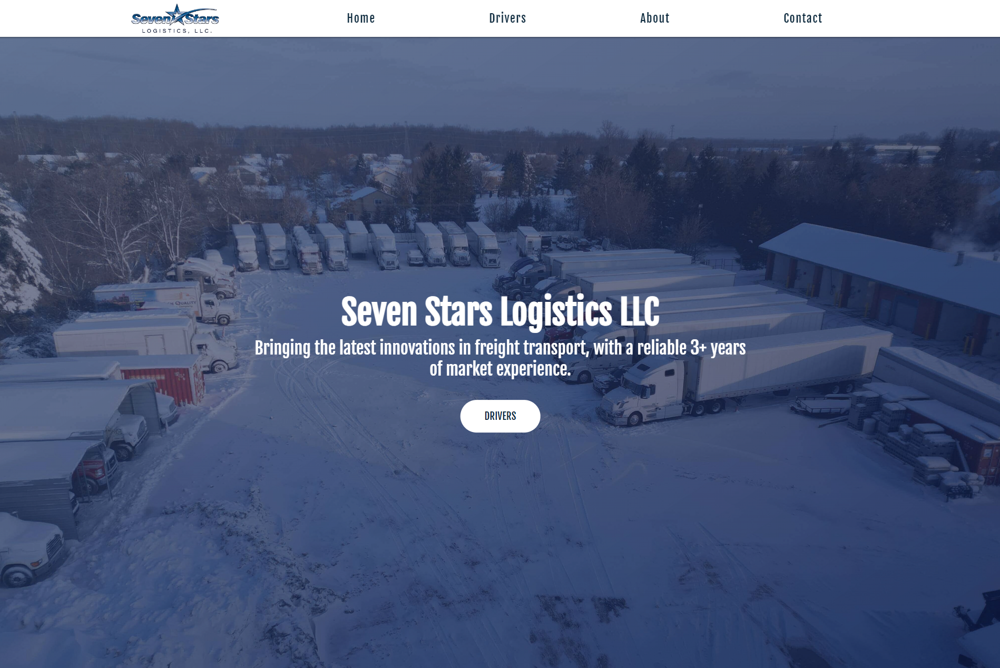
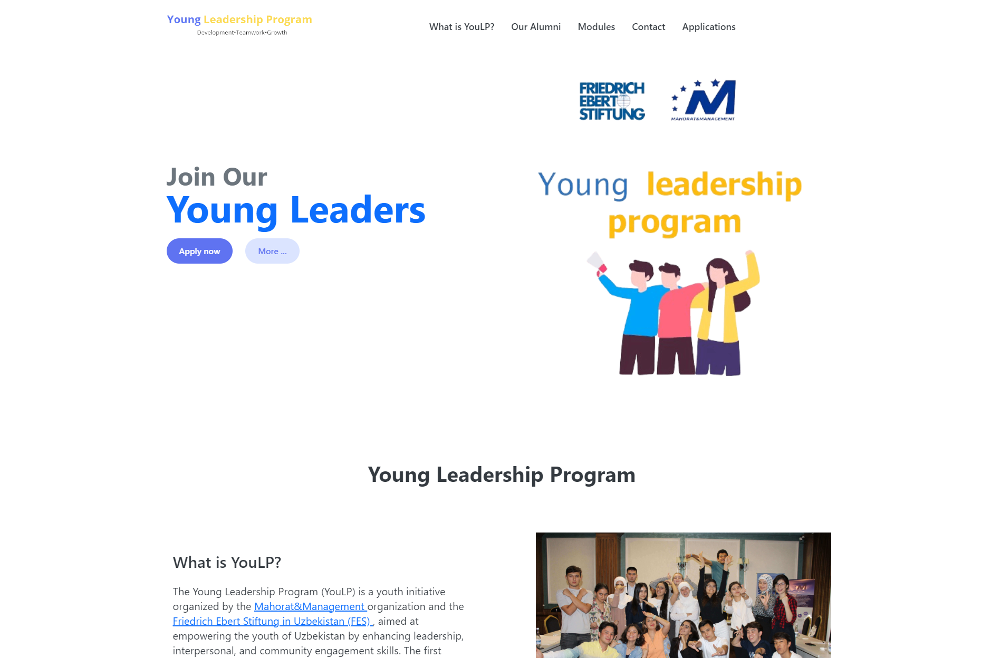

About me
Aspiring Frontend Developer with a passion for creating visually appealing websites and user-friendly interfaces
Proficient in JavaScript and React, eager to contribute to innovative web development projects
Seeking internships as a Project Manager or Frontend Developer to blend technical skills with management experience
Aiming to drive impactful solutions and enhance expertise in the dynamic world of Information Systems
Education
Academic Lyceum in Bukhara (2019 - 2021)
Webster University in Tashkent (2021 - 2025)
- Bachelor of Science in Computer Science
- Completed with a GPA of 3.6/4.0
Leadership and Internships
Young Leadership Development Program (YLDP) Finalist (Feb 2024 - Aug 2024)
- Hosted by UzTEA and Mahorat and Management
- Contributed to impactful projects, including an internship as a Project Manager for a gym management system.
Young Professional Internship Program (YPIP) Finalist (Jun 2024 - Aug 2024)
- Hosted by American Councils
- Interned in the Finance department at Webster University, handling accounting for payments and salaries, and managing contracts.

Seven Stars Logistics LLC
In this project, I utilized React Routers, Single page applications, React Components, useState Hook
in making this website professional and visually appealing
Reduced CSS code size by 20% through the use of SASS/SCSS and BEM methodologies, ensuring
faster rendering and a more responsive application.
Ensured 100% cross-browser compatibility, tested on 5 different browsers, by adhering to best
practices in web development and using modern frameworks.
Learn more

Youlp Website
Increased user engagement by 40% through the creation of intuitive navigation and
interactive elements using React and Tailwind.
Contributed to a 30% increase in customer inquiries and sign-ups by optimizing the call-to-
action elements and providing clear, concise information throughout the site.
Learn more